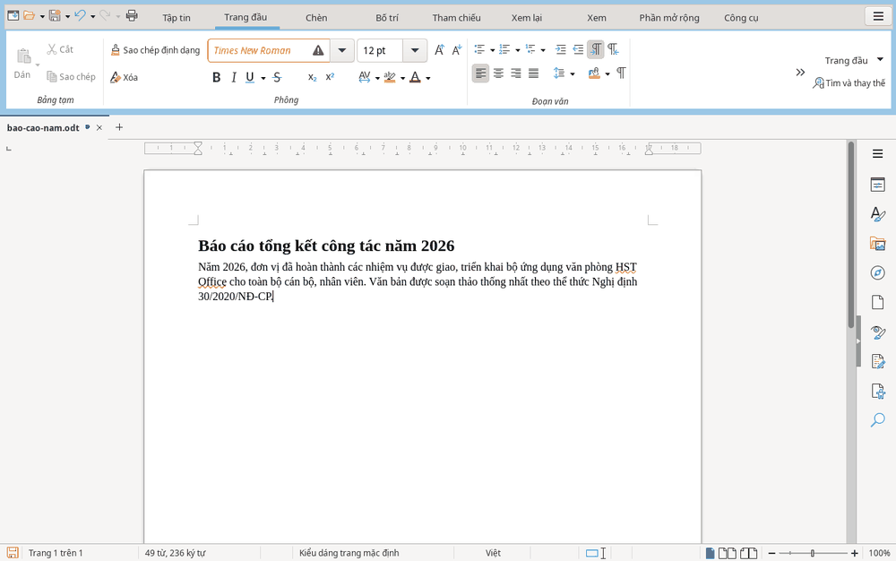
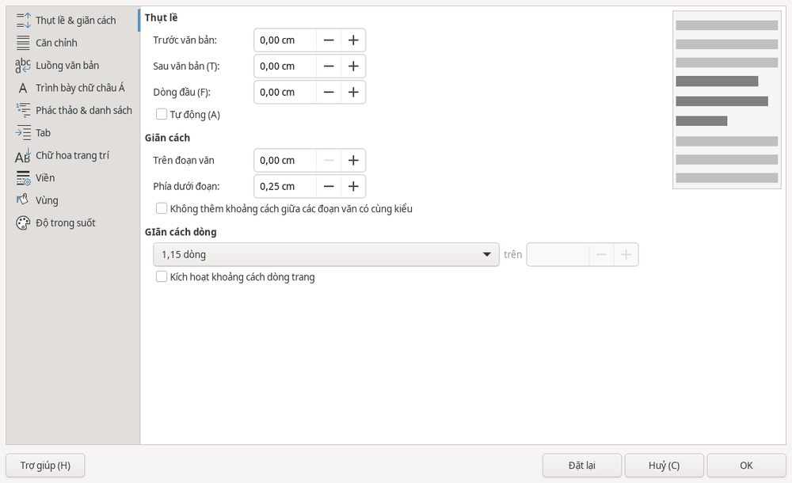

Văn bản
Văn bản: soạn thảo và định dạng
HST Writer dùng để soạn công văn, báo cáo và hợp đồng. Bạn có thể định dạng chữ, đoạn văn hoặc dùng kiểu đoạn để giữ cách trình bày thống nhất.
Nhập và định dạng chữ
- Tạo từ , rồi gõ nội dung.
- Chọn phần chữ cần định dạng.
- Mở thẻ để đổi phông và cỡ chữ.
- Dùng Ctrl+B để in đậm, Ctrl+I để in nghiêng hoặc Ctrl+U để gạch chân.

Căn lề đoạn văn
Chọn đoạn cần định dạng, rồi dùng phím tắt tương ứng.
| Cách căn | Phím tắt |
|---|---|
| Căn trái | Ctrl+L |
| Căn giữa | Ctrl+E |
| Căn phải | Ctrl+R |
| Căn đều hai bên | Ctrl+J |
Thụt lề, giãn dòng và khoảng cách đoạn
- Chọn đoạn cần chỉnh.
- Mở .
- Trong mục , điều chỉnh phần thụt lề, khoảng cách đoạn và giãn dòng theo nhu cầu.
- Bấm .

Dùng kiểu đoạn
Dùng , cho các tiêu đề và cho phần nội dung. Kiểu đoạn giúp định dạng thống nhất; mục lục tự động dựa vào các kiểu tiêu đề.
Để thêm bảng hoặc ảnh, xem Bảng, hình ảnh, tìm kiếm. Để đặt lề trang, xem Trang, in và PDF.